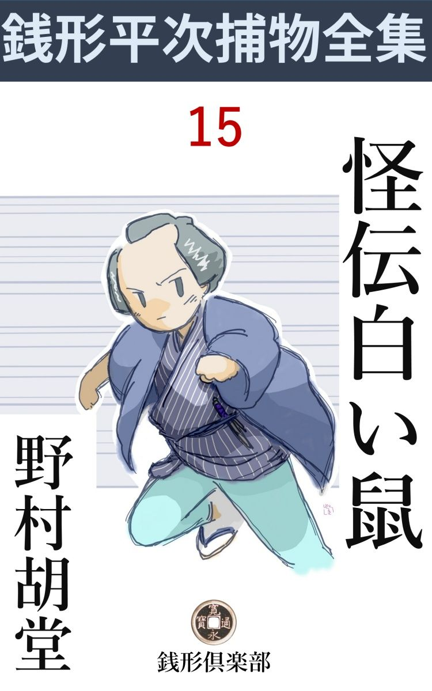
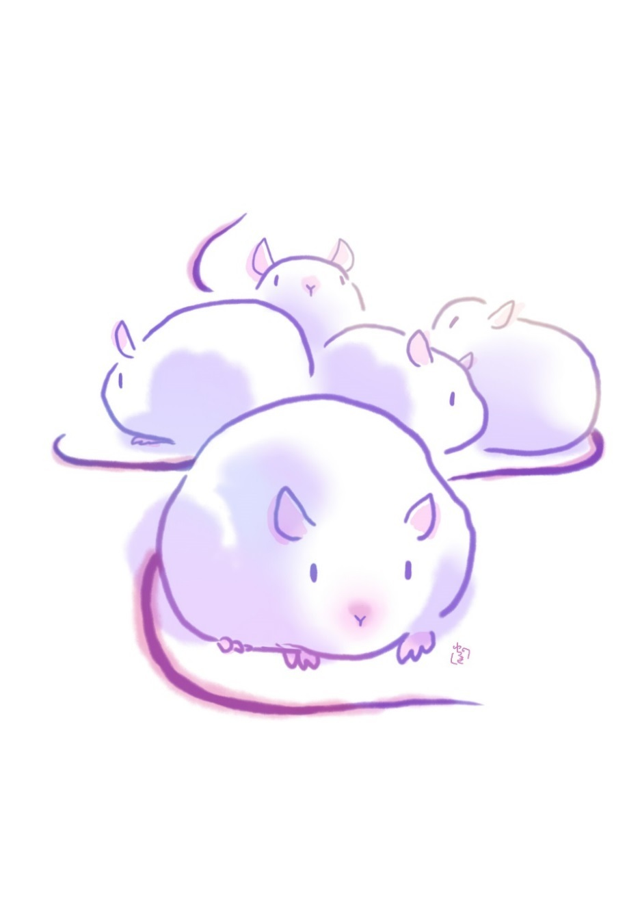

| 怪伝白い鼠: 銭形平次捕物全集第15話 (銭形倶楽部) | |
| 野村胡堂 | |
| ZENIGATA CLUB (2018) | |

一
「親分は、本当に真面目 に聞いて下さるでしょうか、笑っちゃ嫌で御座いますよ」
「藪 から棒に、そんな事を言っても判りゃしません。もう少し順序を立てて話して見て下さい。不思議な話や、変った話を聞くのが、言わば私の商売みたいなものだから、笑いもどうもしやしません」
銭形の平次は、凡そ古文真実 な顔をして、若い二人の女性に相対しました。捕物の名人と言われている癖に、滅多に人を縛らないから、一名縮尻 平次ともいう、読者諸君にはお馴染 の人物です。
二人の女というのは本町三丁目の糸屋の娘お雛 と、その女中のお染、お雛はまだ十七ですが本町小町といわれた美しさ。本当に透 き通るような江戸前の娘で、お染は平次の女房お静のお針友達で、この時は二十一二、少し縁遠い顔立ですが、その代り口の方は三人分も働きます。
根岸の寮にいるお雛 主従 が、何か思案に余ることがあって、銭形の平次の宅 を訪ねたのは、若葉時のよく晴れた日で、久し振りのお静に逢っても、ろくに話もせずに、いきなり平次に引合せて貰って、こんな調子に切り出したのでした。
「ね、親分、親分はお化とか幽霊とかいうものがこの世にあると思いますか」
とお染。お盆 のような顔を緊張さして、果し眼 で詰め寄るのを見ると、義理にも幽霊がないなどとは言われそうもありません。
「あるとも言い、ないとも言うが、私は見たことがないから何とも言えませんよ」
藍微塵 の袷 を、膝が破れそうに坐って、この時代では何よりの贅沢とされた銀の吸口 のチョッピリ付いた煙管で煙草盆を引寄せる平次は、若くて好い男ながら、何となく捕物の名人らしい貫禄 が備 わっております。
「そのお化が出るんですよ、親分」
「どこへ？」
「お嬢様と坊ちゃまがいらっしゃる、根岸の寮 に」
「ヘエ------少しく詳 しく話して見なさるがいい。岩見重太郎のように、乗込んで退治というわけには行かないが、事と次第によっちゃ、お化けを縛るのも洒落 ているだろう」
「親分、冗談や、拵 え事じゃ御座いません。これは、現に、私もお嬢様も見た話で、そのために坊っちゃまは、熱を出したり、引付けたりする騒ぎですよ」
お染は自分の雄弁を試みる機会を狙っていたように、勢い込んで話し始めました。
本町三丁目の糸物問屋、近江屋 というのはその頃の万両分限の一人ですが、二三年前に主人 が亡くなり、続いて一年ばかり前に、母親が死んで、今は、主人の弟、友二郎が支配人として、店の方一切を取仕切り、娘のお雛 と、その弟で四つになったばかりの富太郎に、女中のお染と下男の六兵衛を附けて、根岸の寮に置き、専 ら身体の弱い富太郎の養生をさせておりました。
友二郎は四十年配、先代の実弟 で、まことによく出来た人間ですが、何分店の方が忙しいので、滅多に寮を見舞っている暇 もありません。それでも、三日に一度、七日に一度ずつは、泊りがけにやって来て、姪のお雛 の美しく生い立つのと病弱な富太郎が、少しずつでも丈夫になるのを見て帰りました。
お雛には先代が取決めた重三 という許婚 があります。これは遠縁の者で、奉公人同様店で働いておりますが、お雛より八つ年上の二十五で、もう愚図愚図 してはいられないのですが、何分お雛がまだ若いのと、母親が死んで一年も経たないので、祝言の盃 をするわけにも行きません。しかし、根岸の寮は無人なので、叔父の友二郎に差支 えのある時はなるべく行って泊まることにしております。
女のように物優しい働き者で、お雛の叔父の友二郎にも信用があり、ことにお雛の弟の富太郎は、重三でなければ夜も日も明けないような騒ぎをしますが、何分店の方が忙しいので、毎晩根岸まで行ってやるわけにも行きません。
お雛 は娘らしい恥かしさのせいか、重三とはろくに口もききませんが、いずれ母の忌 が明けさえすれば、改めて祝言をさした上、別に小さい世帯でも持たせることになっておりますから、嫌いという程ではなく、従って黙ってその運命を待っているのでしょう。
こうして日は無事に過ぎましたが、何時の頃からか、総領の富太郎は虫 の気 がひどくなって、夜分にひどくうなされたり、物驚きをしたり、時々は引付けたり、次第に糸の如く瘦せ細って、頼りない有様になって行くのでした。
「坊ちゃまにお訊きすると、夜中にお化が出る、とこう仰しゃるんですよ。染や、何とかしておくれ、重三、重三------と、時々はむずかりなさいますが、どんなお化が出るのやら、一向見当が付きません」
お染はこう言いながらも、幼 い富太郎が、目に見えぬあやかしに悩まされて、夜と共に怯 えて泣き騒ぐ怖ろしさを思い出したものか、肥っちょの肩を縮 めて、ゾッと身を顫わせました。
「その坊ちゃんは、誰と一緒に寝ていなさるのかい」
と平次。
「いえ、疳 の強いお子さんで、そんなに物驚きをなさりながらも、どうしても誰とも一緒にお休みになりません。仕方が御座いませんので、お嬢様か私が、床を並べて、お仏 壇 の前に休んでおります」
「お仏壇の前？」
「え、それにもわけが御座います。去年御新造様がお亡くなりになる時、大事なものは私の魂 と一緒に仏壇の中に入れてあるから、お嬢様かお坊ちゃまは必ずここで休むようと仰しゃったので御座います」
「フーム、大分話が面白そうだな。ところで、その坊ちゃんが怯 えるのは毎晩の事かい」
「いえ、時々で御座います」
「番頭の友二郎さんの泊っている時とか、手代の重三さんの泊っている時とか、決ってはいないのか」
「それが不思議で御座いますよ、親分。重三さんの泊った時は何ともなくて、番頭さんの泊った時に限って、お坊ちゃまは怯 えなさるんです」
「------」
二
「お坊ちゃまの瘦 せ細るのを見ていると、お気の毒でお気の毒で、とても我慢が出来ません。お嬢様もひどく御心配なすって、そう言っては悪いが、明神様をだしに使って、お願いに上がったようなわけで御座います。親分、何とか工夫をしてやって下さいませんでしょうか」
達弁 にまくし立てるお染の蔭から、高貴な感じのするほど美しいお雛が、八丈の袂 を爪繰 るように、おどおどした顔で平次を見守ります。
「それは驚いたな、お染さん。しかし、たったそれだけの話なら岡っ引へ来るより、医者を頼むのが順当じゃあるまいかネ。私にお化 を縛らせるより、虫下しを二三服呑ませた方が手っ取り早く利きはしないかい」
平次はさして驚く様子もありません。
「いえ、親分。それだけなら、わざわざここまでは参りません。四つになったばかりのお坊ちゃまのむずかるのは、当り前と言えばそれまでで御座いますが、捨て置き難いのは、お嬢様にも何か変なことばかり付き纏 います」
「と言うと------」
「家の中に、お嬢様の命を狙う者があるので御座います。一度はお嬢様の御飯の中に、石見 銀山 の鼠取りが入っていたのを、重三さんが見付けて大騒ぎをしたことが御座います」
「重三------というと、お嬢さんの許婚 の？」
「ええ」
お雛はすっかり赧 くなって、お染の蔭に隠れてしまいました。
「どうして鼠取りが御飯の中へ入っていると判ったんだろう」
「それは判りませんが------何でもその前の晩は珍らしく番頭さんも重三さんも寮 へ泊って、朝はお二人にお嬢様と坊ちゃまと四人で御飯を召上ってお在 で御座いました。重三さんがいきなり、お嬢様の御飯が、変な色だから、と急に止めなさるんです」
「フーム」
「試しに猫にやって見ると、猫はすぐ死んでしまいました。御飯の中には、石見銀山の鼠取りが、うんと入っていたんです」
「御飯は誰が炊くんだ」
「まア、親分。まさか私がそんな事をするとは思っていらっしゃらないでしょうね」
肥っちょの癖にお染は女だけに、矢張り妙に気が廻りますが、
「お前さんなら、石見銀山の鼠取りなどを入れるより、お嬢さんを捻 り殺す方だろう、私はそんな事を疑ってはいない、安心しなさるがいい」
そう言われると、からかわれながらも、人の好さそうなお染は釈然 としてしまいます。
「その他、お嬢様だけ外 にいる時、物置の材木が倒れて来たり、少し薄暗くなってから歩くと、変な男がつけて来たり、そりゃ怖いことがあるんです。親分、私のような物の判らない女が考えても、お嬢様とお坊ちゃまをどうかしようという恐しい人間が蔭で糸を引いてるような気がしてなりません。御苦労でも、ちょいと、根岸までお出かけ下すって、せめてお化の出ないような工夫だけでもしてやって下さいまし。そうでもして頂かないと、どんな事になるかわかりません」
お染の熱心な調子は、到頭平次を動かしてしまいました。
「よし、一 と肌 脱いでみよう。ところで、今晩は外によんどころない用事があるから、明日出かけるとして------」
「親分、今晩は番頭さんが寮へ来なさる晩で、又どんな事があるか心配でなりません。出来ることなら、私共と一緒にいらしって、寮ヘ一と晩泊って見ては下さいませんか。お静さんへは、私がよくお願いしますから」
お染はなかなか引きそうもありません。
「そうも行かない------こうしよう。家にゴロゴロしている八五郎、大して賢 い人間じゃないが、その代り毒のない、話の面白い男だ。それを連れて行って、今晩一と晩用心棒にするがいい。知恵は大したことはないが、力だけは人の二人分もある」
「------」
お染は何か腑 に落ちない顔をしておりますが、さすがにこの上は争うこともなりません。
「ガラッ八、そこにいるのか」
「ヘエ------」
「お嬢さんとお染さんについて、根岸まで行ってくれ。今晩は向うへ泊るんだ」
「ヘエ------、あんまり知恵のねえ人間でも役に立ちますかい」
「馬鹿ッ、立ち聞きしていたのか」
と平次。
「そういう訳じゃねえが、何しろお屋敷が広いから、あんな大きな声で話しゃ、どこの隅っこにいたって聞えますよ。岡っ引はよく人の話を気を付けて聞くがいいって、日頃親分も言いなさるし------」
「呆 れた野郎だ」
「もっとも、あっしの悪口が始まりそうになった時は、聞いちゃ悪かろうと思って耳の穴へ指を突っ込んで見たんだが、こいつは長く続きませんや、気色が悪くて------」
「馬鹿だな、お前は。まア何でもいいやな、お嬢さん方と一緒に出かけるんだ」
「へエ------」
「ね、親分。八五郎さんとかを一緒に行って貰っては、お化 にも悪人にも用心させるから、今晩そっと来て、寮へ入 り込んで頂けないでしょうか」
とお染。
「成程、それも面白かろう。そう言っちゃ何だが、お染さんは思いの外軍師 だね」
「あれ親分、冷かしちゃいけません」
三
その晩、ガラッ八の八五郎が、根岸の百姓町にかかったのは亥刻 （十時）を少し廻った頃、御行 の松の手前を右へ折れて、とある寮の裏口へ、忍ぶ風情に身を寄せました。
平次に冷かされつけている狭い袷 、弥造 を念入りに二つ拵えて、左右の袖口が、胸のあたりで入山形になるといった恰好は、『色男には誰がなる』と、言いたいようですが、四方 が妙に淋しくて、住む人も少ないせいか、ろくな犬も吠えてはくれません。
八五郎は、裏口へ寄り沿ったまま、弥造の中から取って置きの拳固 を出して、そうッと撫でるように、二つ三つ雨戸へ触 って見ました。それを待っていたように、そっと中から開けたのは、寝巻姿のお染、まだ寝乱れてはいませんが、醜 いながらも妙に娘らしくなまめきます。
「八五郎さんかい？」
「うむ、用意は？」
引入れて雨戸を締めると、中は真っ暗。手と手を握った二人は、遠い廊下の有明を目当に、逢曳 らしい心持で、奥へ辿 りました。
「まだかい、お染さん」
「シッ、二階には番頭さんが泊っている、静かにしておくれ。お前さんなんかを引入れた事が知れると大変なことになるよ」
「人間はそれっきりか」
「裏の方には、爺やの六兵衛が寝てますが、これは離れているし、寝酒がきいているから、眼なんか覚 めはしない」
「重三とかいった手代 は？」
「今晩は本町の店に泊っているし、店卸 しで忙しいとさ」
これだけ話しているうちに、廊下は尽きて、先代が信心と物好きで、奥の一と間へしつらえた、大仏壇のある部屋の前に着いておりました。
「お嬢様」
「お染かい」
中から、これも待っていたように、薄明りの廊下の中に滑 り出たのは、美しいとも何とも、言いようのないお雛 の寝巻姿。疋田 鹿 の子 の長襦袢 に、麻の葉の扱帯 を締めて、大きい島田を、少し重く傾 げた、﨟 たけた姿は、ガラッ八が見馴れた種類の女ではありません。それはあまりに美しく、悩ましい姿だったのです。
「八五郎さん、お坊ちゃまが眼をお覚しになると悪いから、ソッと入って様子を見ていて下さいよ。今晩は番頭さんが泊っているから、きっと又、何か始まるに相違ない------」
「------」
ガラッ八は黙って部屋の中へ入 りました。六畳ばかりの仏間、正面に見事な大仏壇 、これは掛金がかかって、締っております。その前に敷いた床が二つ。一つには、四つになる富太郎がスヤスヤと眠り、一つは今お雛 が脱け出したまま、少しなまめかしく、紅い裏のかい巻をはね返しております。
枕許には、水差しと湯呑、それに有明の行燈 が一つ、一本燈芯で、薄明く灯 いているといった寸法でした。
「寒くなるか、睡くなったら、その床へ入 って休んで下さいな。お嬢様がいいって仰しゃるから」
言い捨てて、お染は、お雛を促 すように、廊下を遠のきます。
「------」
八五郎は暫く黙って、行燈の前に坐りました。富太郎はスヤスヤと眠っておりますが、如何にも弱そうな少し発育の遅い子らしく、熱っぽい唇も、削 げた頬も、何となく頼り少なく見えます。
側に敷き放したお雛の床の、紅い掻巻 の裏が、妙に悩ましく眼について、八五郎も暫くはモジモジしておりましたが、半刻 ばかり後には、恐ろしい睡気 と、初夏の薄寒さにこらえ兼ねて、お染に言われた通り、お雛の敷き捨てた床の中へもぐり込んでおりました。
中には、まだほんのり娘のほとぼりが残って、若い女だけが持つ、不思議な分泌物 の香いが、八五郎をくらくらさせます。懐紙を掛けた、赤い箱枕、 八五郎には馴れない代物 ですが、娘の髪の匂いが沁 みて、独り者の八五郎には、これも妙に悩ましい代物です。
暫く経ちました。何時 ともなくウトウトしていたらしい八五郎は、コトリという音に眼を覚したのです。何とも言えない不気味さが、部屋の中一パイに漲 ぎって、頭の上へ何やらノシかかって来るような心持がします。
ひょいと見ると、何時、どうして開いたか、先刻まで厳重に掛金をおろしていた仏壇の戸が、八文字に開いて、行燈の灯を映 した、金色の物具の中に、何やら、不気味な青い物------。
八五郎はゾッとして枕を欹 てました。紛 れもありません。仏壇の中、位牌 の前に現われたのは、青黒い地に紅 隈 を取って、金色の眼を光らせた、鬼女 の顔なのです。
「怖い、怖いよう」
不意に眼を覚 した富太郎は絶え入るように泣き叫んで、側に寝ている筈の姉の懐へ飛込もうとしましたが、それが、思いもよらぬ大男------しかも、あまり人相のよくない八五郎と見ると、二度目の驚きに、
「あッ」
そのまま引付けてしまったのです。
「しまった」
八五郎は飛起きて子供を抱き上げましたが、眼を白黒にして、手足をヒクヒクさせるだけで、どうにもなりません。
八五郎は、子供を元の床の上に置いて、夢中で廊下へ飛出しました。
「大変、お染さん、坊ちゃんが引付けた」
案内知ったお染の部屋の外から、もう、加減もなく声を張り上げるのでした。
四
お雛 とお染が、八五郎と一と塊 りになって駆け付けたのは、それからほんの三分、------昔の人の言いようを仮 りて言えば、物の百も数える間がありませんでした。
開いたままの障子から飛込むと、行燈 も床もその儘になっておりますが、ツイ今しがたまで、ヒクヒクしながらも生きていた筈の、富太郎の姿が見えないのです。
床は二つとも空っぽ、その辺には、人間を隠すような場所もありません。
「富ちゃん」
「坊ちゃま」
お雛とお染は、血眼になってその辺を探し廻りました。
「あッ」
仏壇の中を覗いていたお染は、蛇 にでも噛み付かれたような悲鳴をあげて、飛退きます。
「何だ何だ」
見ると、八五郎も先刻驚かされた鬼女の顔------、行燈を提 げて近々と見ると、それは、仏壇の中にはあるまじき、恐ろしい鬼女の面に、髢 の毛まで冠せて、位牌 の前に据えてあったのです。
「どうしたんだ、大変な騒ぎじゃないか」
その時漸 く下の騒ぎを聞付けたらしい、番頭の友二郎は、少し寝乱れた恰好で、二階から降りて来ました。仏間のすぐ横は梯子段で、その上は友二郎の寝室になっていたのでした。
「お坊ちゃまが見えません」
「何？」。
「あっと言う間に見えなくなったんです」
お雛とお染の説明を聞きながらも、友二郎の眼は、そこに立っている男------曽 て見馴れない八五郎の上を離れようともしません。
「この方はどこの人なんだ」
「これは、あの、八五郎さんといって、神田の銭形の親分のところにいらっしゃるんです」
「そうか、どうしてここにいなさるんだ」
「あの、近頃怖 いことばかり続くんで、私がお頼みして参りました。ツイ先刻いらしったばかりです」
お染のシドロモドロな弁解を、友二郎は世にも苦り切った顔で聞いておりましたが、御用聞、手先と聞くと、さすがに商人 らしい弱さで、強いことも言えません。
「兎に角、手分けをして富太郎を探すんだ、家の外へ出るわけはないんだから。それから六兵衛はどうした？」
「呼んでも来ません。寝しなに番頭さんの御馳走で一杯やったんですから、こんな事では眼を覚さないかも知れません」
お染は飛んで行って、家の反対側、お勝手の隣の下男部屋から、爺やの六兵衛を叩き起して来ました。どんなに眠かったか、素肌の上に半纏 一枚羽織って、胸毛 と一緒に、掛守 りと、犢鼻褌 が、だらしもなくはみ出します。
年はもう六十恰好、お酒を頂くと、疳性 で、素裸でなければ眠られないという厄介な親爺、これも遠縁の飼い殺しで、こんな時役に立つような人間ではありません。
それから手分けをして、家の中をすっかり探しましたが、富太郎は影も形もありません。暁方近くなると、出入りの鳶 の者や、近所の百姓衆も来てくれましたが、床板を剥ぐように探しても富太郎が見えないのですから、これは神隠しに逢ったとでも思う外には考えようもなかったのです。
一同がっかりして、元の部屋------仏壇 の扉も、二つの床もそのままにしてある仏間へ引返しました。
「あッ、お坊ちゃまが------」
お染が一番先に、元の床の中に、楽々と寝かされている富太郎に気が付いたのです。
「どれどれ」
雪崩 込んだ五六人、誰ともなく富太郎を抱き上げましたが、
「あッ、死んでいる」
驚いて床の上へ落してしまいました。可哀そうに富太郎は、この時もう冷たくなっていたのです。
五
「右の通りだ、親分。こいつはあっしの手におえねえ、根岸まで行って見ておくんなさい」
雨戸を開けると、翌る日の朝日と一緒に飛込んで来たガラッ八、飯を食う暇もなく一夜の恐ろしい冒険を報告しました。
「成程、そいつは念入りだ。ガラッ八兄さんじゃ目鼻が明くめえ、飯でも済ませて、一緒に行ってみるか」
「そんな暢気 なことを言って、親分」
「まア、いいやな、逃げも隠れもする下手人じゃあるめえ。それに、一番怪しい鬼の面は、ちゃんと取って置いてあろうし」
「それがいけねえ。親分、子供が死んでいるのに気が付いた時見ると、仏壇にも部屋の中にも面 はねえ------」
「そうだろう、それも筋書通りだ。そう来なくちゃ話が面白くならねえ」
と平次。
「いやに解ったような事を言いなさるが、親分。その面の行方が、ここから見通しだとでも言うんですかい」
「まあ、そんなところだ」
「それじゃ出かけましょう」
「待ちなよ、飯を食わなきゃア、戦が出来ねえ------。それから二つ並べて敷いてあった床は。その儘にしてあるだろうな」
「いいえ、大勢入 って来て、邪魔 っけだから、娘の方の床は上げてしまいましたよ」
「あ、惜 しいことをした」
「何か、あの床の中に証拠になる物でもあったんですかい」
「うんにゃ、手前が好い心持になってもぐり込んだという、紅 裏 の娘の掻巻 と、その床が見て置きたかったんだよ、後学のために」
「チェッ、いい加減にして下さいよ」
「さア。出かけよう」
冗談を言いながら仕度をした平次。ガラッ八を案内に、風 薫 る根岸へやって行きました。
寮へ着いたのは、彼れこれ巳刻 （十時）、まだ何もかもその儘ですが、物好き半分、近所の衆や店から駆け付けた人達で、家の中は押し返しもならぬ有様です。
「ガラッ八、これじゃ、お化 の方で驚いて逃げ出すだろう。用事のないものは、外へ出て貰おうじゃないか」
「合点」
ガラッ八は勢い込んで飛上ると、
「さア、銭形の親分がやって来た。下手人の疑いを掛けられたくない者は、皆んな外へ出て貰おうか。その辺にマゴマゴしていると、縛られるかも知れないよ」
精一杯に張り上げると、驚いた有象 無象 、雪崩 落ちるように外へ飛出してしまって、後に残ったのは、お雛 、お染、友二郎、六兵衛、それに本店から駆け付けた手代のうち、一番縁故の深い、お雛の許婚 の重三だけになりました。
「なるほど、疑われてもいいという人達ばかりだ。親分、何から手を付けましょう」
平次は黙礼したまま、家の中へ入 ると、何より先ず仏間へ入って、まだ小さい、床の上に寝かして、枕許に樒 と線香だけ立てたままの、富太郎の死体を見せて貰いました。
八五郎が言った通り、四つにしては小さい方で、発育も知恵も遅れているようですが、姉のお雛に似て、玉子を剝 いたような可愛らしさ。それが、顔一面に苦痛の色を浮べ、眼も口も大きく開いたまま、冷たくなっている痛々しさに、物馴れた平次も思わず顔を反 けました。
身体には針で突いたほどの傷もなく、黒血一つ溜ってはおりませんし、喉 も滑らかに白大理石のように無傷で、絞め殺した跡などは夢にもありません。全身の美しい色沢 、口を開いて、舌を少し出している様子、苦悩の色こそありますが、毒殺でないことは、素人の平次にもはっきり判ります。
どうして死んだか------又は殺されたか、これでは全く解りません。耳の穴や肛門 までも丁寧に検査して見ましたが、どうしても、病気で死んだか、引付けたまま死んだとしか思われない様子に、平次もさすがに腕を拱 くばかりです。
死体解剖などのない時代に、これ以上誰が見てもわかるわけはありません。平次は一たん裸にした子供に、元の通り着物を着せると、グルリと家の外を一と廻りして見ました。外から曲者の入った様子はもとより残ってはおりません。
それから、家族の一人一人に逢いました。お雛 とお染は顔 馴染 、別に聞くこともありません。番頭の友二郎は、確り 者の四十男で、金儲けや商売には抜け目のないような人柄 ですが、昨夜は少しばかり晩酌 をやって、亥刻 （十時）そこそこに二階へ上がったきり、便所へも起きなかったというのは疑う余地もありません。
爺やの六兵衛は、近江屋の遠縁の者で、年を取ってから転げ込みましたが、先代や友二郎が同情して一生飼い殺しの寮番にして置く位ですから、別に害意のある様子も見えません。若い時には随分いろいろの事もやったようですが、それだけ人間が揉 めて、如才なくて、器用で、お雛や重三には好い相手だったのです。若主人の坊ちゃんが死んで、これはオロオロするばかり。
「支配人 さんの晩酌を別けて頂いて何にも知らずに眠ってしまいました。知ってさえいりゃ、こんなことをさせはしません」
年寄らしく無駄なところで歯ぎしりをしております。
お雛の許婚の重三は、十年越し店に勤めた忠義者で、女のように優しい感じのする、物柔かな好い男、近江屋にはこれも遠縁に当るそうですが、それよりは、真面目 な勤め振りと、人柄を見込まれて、先代がお雛の許婚に定めた位の若者です。
「何とも申上げようがありません。昨夜は棚卸 しで、店の方がやけに忙しかったので、気になりながら四五日こっちは見廻りかねておりました。今朝暗いうちに使が来て、本当に驚いてしまいました。坊ちゃんは、一番よく私になついておりましたが、何という奴の仕業 で御座いましょう------。」
気の弱そうな重三は、もう涙含 んでさえおりました。
平次はこれだけ調べると元の仏間へ帰りました。もう一度、念入りに富太郎の死体を見ると、どこにも傷はないと思ったのは間違いで、右手も、左手も、生爪 が少し剥 けて、爪際から血がにじんでいるのです。しかし、それだけのことです。引付け際に苦しがってその辺を掻 きむしったとしたら、これ位のことはあるべき筈です。
六
「親分、あの鬼の面 はどこへ行ったでしょう」
ガラッ八はとうとう切り出しました。
「フーム」
「あの面を隠している奴が下手人に決ったようなものじゃ御座いませんか」
「それは何とも言えないな。だが、ガラッ八」
「ヘエ------」
「面だけなら、直ぐ見付かるよ」
「だから、どこにあるんで」
「二階の押入 か、天井裏か、包の中を探してみな。そこになかったら、俺は十手捕縄をお上へ返すよ」
「ヘエー、本当ですか。親分」
ガラッ八は段々を二つずつ飛上がって二階へ行きましたが、間もなく、凱歌 をあげて、逆落 しに降りて来ました。
「あったあった、ありましたよ、親分」
そう言う右の手には、髢 を冠せた、凄 まじい鬼女の面が、青い地、赤い隈 に、金色の眼を光らせております。
「そうだろう、それは定石 だ」
「これだけ判りゃ、下手人は何奴 です。親分、早く縄を打って引立てましょう」
「騒ぐな、八。その面 はどこにあったんだ」
「二階の部屋の隅にある風呂敷包の中ですよ」
「あッ」
それを聞くと、側にいた番頭の顏は真っ蒼になってしまいました。
「お聞きの通りだ。風呂敷というのは、お前さんの持物でしょう」
と平次。さり気 ない調子と言うよりは、巳むを得ないと言った口調で顫え上がる友二郎を顧 みます。
「そうですよ、親分。どうして、そんなところにあったんでしょう。私には判らない」
「いや、私にはよく判る。気の毒だが番頭 さん、子分の者に送らせるから、暫く八丁堀の笹野様の役宅へでも行っていて下さい」
「私は何にも知りゃしません。親分、そりゃ何かの間違いでしょう」
「いや、面が二階の包にあるようじゃ、それより外に私にはさばきようがありません。八、誰か来ているだろうな」
「え、二三人来ていますよ」
「友二郎さんを送るんだ------。お前だけここに残ってくれ」
「ヘエ------」
「親分、番頭 さんはそんな事をなさる方じゃ御座いません。これには何か間違いがありましょう、どうぞ------」
心配そうな顔を出す重三 を振りもぎるように、
「どうも仕方がありません。黙って見ていて下さい」
平次は剣もほろろにそっぽを向きます。
七
何時の間にやら日は暮れました。
富太郎の死体の始末をして、お通夜 が始まる騒ぎですが、銭形の平次と、その子分の八五郎は、まだ帰ろうとしません。
「お嬢様の身の上に、何か危いことでも？------」
お染が心配して訊くと、
「大丈夫だ。そんなことはあるまいが、俺はどうしてあの子供を殺したか、それが知りたいんだ。岡っ引き冥利 だ、心配することはないから、放って置いてくれ」
平次は事もなげに言って、相変らず、仏間から、二階、階段、納戸 などを、根気よく調べ廻っております。
「この白 鼠 を飼っているのは誰だい、お染さん」
暗い納戸の中に、かなり大きな籠 の中に入って、精巧 な車を廻している五匹の白鼠を見付けると、平次の好奇心は火の如く燃えます。

「爺やですよ」
「ちょいと呼んでくれないか」
「へエ------」
お染と入れ違いのように、爺やの六兵衛はもみ手をしながら入って来ました。
「この鼠を飼っているのは、お前さんだってネ」
「ヘエ------」
「結構な道楽だネ、お前さん生物 は好きかい」
平次の調子はさり気ないので、六兵衛もツイ滑 らかに舌が動きます。
「ヘエ------、そんなわけでも御座いませんが、白鼠と、小鳥を少し飼っております。馴れると、これが飛んだ可愛らしいもので、ヘッヘッ」
「そうだろう、こんな生物を可愛がる人は、矢張り仏性 なんだよ。ところで、八、お前はここで見張っていてくれ、俺はちょっと隣の部屋へ行って来るから」
平次は納戸 の外へ出ましたが、ほんの暫くすると帰って来て、天井の壁 際 に少し出ている、細い糸を引っ張ると、それを白鼠の籠の外へ出ている、車の心棒に固 く結びました。
「親分、何をなさるんで」
「まアいいやな、外へ出て見よう」
平次はガラッ八と六兵衛を促 して、仏間へ取って返しました。平次の様子の只 ならぬに不安を感じたか、六兵衛はしきりにソワソワしておりますが、側にガラッ八が引添って動かしません。
「仏壇 は咋夜もこの通り締っていたんだね、八」
「ヘエ------」
「昨夜の様子と、今の様子と、少しも変りはないか」
「ありません。昨夜の通りですよ、扉は締っているし、掛金はかかっているし------あッ」
八五郎が驚いたのも無理はありません。厳重に掛けられた筈の掛金が、誰も手を加えないのに、独りで上へ吊上 げられて、カチャリと外 れると、仏壇の扉は、中から押されるように、サッと八文字に開いたのです。
「どうだ、八。この通りだったろう」
「え。どうしてこんな事が、親分」
「後で話す。その爺 を逃すなッ」
形勢不穏 と見て、その場から逃げ出そうとする六兵衛。早くもその後ろから平次の手が延びて、仏壇の前で雁字 がらめにされてしまいました。
「八ッ、もう一人、あの手代を捉 まえろ、重三とかいった」
「よしッ」
八五郎は横っ飛びに飛び出しましたが、間もなく裏の方から。
「親分、大変。親分」
とわめき立てます。六兵衛を引っ立てて、飛んで行って見ると、お雛 を小脇に抱えた手代の重三、女のような優男 に似気なく八五郎を大地に叩き付けて、起き上がろうとするのへ匕首 が------。
危機 一髪のところへ、平次得意の投げ銭が飛びました。二の腕の関節 を永楽銭 に打たれて、思わず匕首 を取落したところへ、飛込んだ平次。好い塩梅に飛んで来てくれたお染の加勢で、この兇暴 な手代をキリキリと縛り上げてしまったのです。
八
「親分、どうして、六兵衛と重三が悪者と解 りました。少し絵解 きをしておくんなさい」
二人の縄付を送りながら、夜の道を、八五郎はこう話しかけます。
「子供の怯 えるのが、番頭の泊った晩に限ると聞いて、これは番頭に疑いをかけようとする者の仕業だなと気が付いたんだよ」
「ヘエ------、こちとらとは物の考えようがまるっきり違うね」
「娘さんの飯に毒の入ってるのを、重三が見付けたと聞いて、いよいよ重三が臭 いと思った」
「益々わからねえ」
とガラッ八。
「そうじゃないか、お雛 さんと坊ちゃんを殺して儲 かるのは、先代の弟の番頭友二郎だ。それに重三はあんな綺麗な許嫁 を殺す筈はないから、番頭に疑いをきせるには、坊ちゃんばかりでなく、お雛さんにも何とかしなきゃアなるまい。毒を入れて見つけ出したのは皆んな重三の細工だ」
「成程」
「ところで、重三は、お雛さんと一緒になったところで、精々小さい店を一つ持たされる位のことだが、坊ちゃんを殺せば、お雛さんの婿 で近江屋の跡取になれる」
「なあーる」
「で、親爺の六兵衛と共謀 で、いろいろ細工をしたのさ」
「親爺」
「そうだよ、顔を御覧。六兵衛と重三は年こそ違え瓜 二 つだろう。六兵衛は身持放埓 で、若い時分は近江屋へ出入りも出来なかったために、せめて伜だけは真人間にしたいというので、名乗りをしない約東で丁稚 に頼みこんだんだ。その後六兵衛も転げ込んだが、二人は、深い謀 みがあるから表向は他人のように暮したんだよ」
「天眼通だね、親分」
「天眼通じゃない。それだけは、番頭の友二郎さんから聞いたんだ」
「白鼠の仕掛けは？」
「あれは、餌 をやっている白鼠は、夜になると腹ごなしに車を廻す、根気の良い生 物 だ。それから思い付いて、車の心棒へ細い糸を手 繰 らせ、壁の上の穴から隣の仏間へ持って行って、仏壇の掛金を引かせたんだ。俺はすぐ開くようにしたが糸を長くすると、半刻位かかるから、六兵衛が仕掛をして自分の部屋へ帰って、皆んな寝ついた頃仏壇が開くんだ。独りで扉の開く仕掛けは、鯨 の鬚 が一本ありゃいい。中から突っ張らせて置くだけの事さ。鯨の鬚は御丁寧にも大仏壇の中にブラ下げてあったよ。誰にも気が付かないのは不思議さ」
平次の明察は疑いを挾 む余地もありません。
「で、親分。子供はどうして殺したんです」
「それには俺も首 を捻 ったが、生爪 が痛んでるのを見て解ったよ。あれは、お前が飛出した後ヘそっと入った六兵衛が、掻巻 へ包んだまま、目を廻した子供を仏壇の下の抽斗 の奥へ入れたんだ」
「えッ」
「抽斗 はあの通り大きいから、奥へ突込んで、手前へ仏具 のこわれを詰めると、少し開けた位じゃわからない。それに気が転倒 しているから少し位抽斗が重くなっても気がつかなかっただろう。------二刻もたって頃合を見て出した時は、すっかり冷たくなっていたのさ。後で気が付いて見たが、ある抽斗の奥には、可哀そうにひどく掻 き瑕 があったよ」
「ヘエ------」
「憎い奴等だ」
「太い畜生だ、二つ三つ殴 ってやりましょうか」
先へ行った縄付を追おうとする、ガラッ八を押えて、
「止せ止せ、どうせお処刑 になる身体 だ。それより、俺は、お前に丁度いい嫁を見付けたよ」
「ヘエ------あのお雛 さん」
「馬鹿、お染の方だよ。当って見ようか」
平次はカラカラと笑いました。
（編注）
作品中には、身体の障害や人権にかかわる、差別的な語句や表現が見られますが、本書が成立した当時の時代背景等が現代とは異なる古典的な文学作品でもあり、著者が故人でもありますので、底本のままとしました。ご理解、ご諒承のほどをお願い申し上げます。
著者---野村胡堂
挿絵---萩 柚月 © 2017
初出---「文藝春秋オール讀物號」昭和七年六月号 文藝春秋社
底本---「錢形平次捕物全集」第一巻 河出書房 昭和三十一年五月五日初版
編集・発行 銭形倶楽部